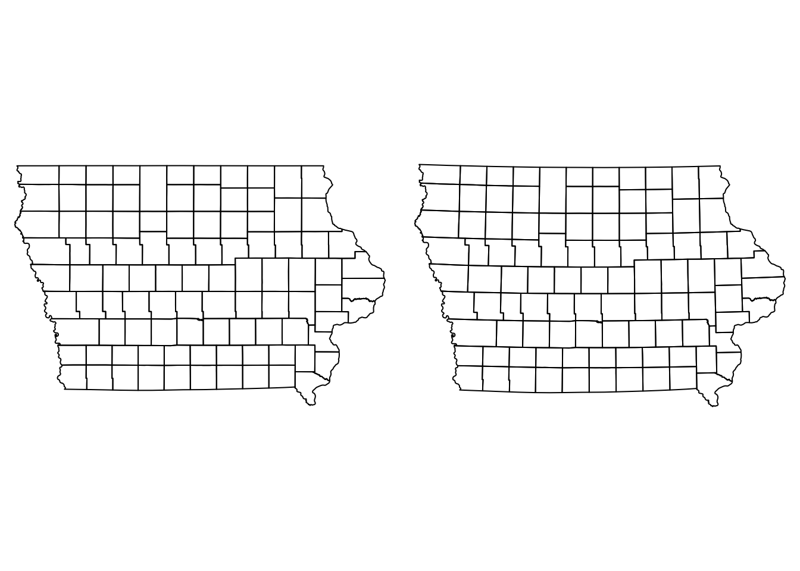
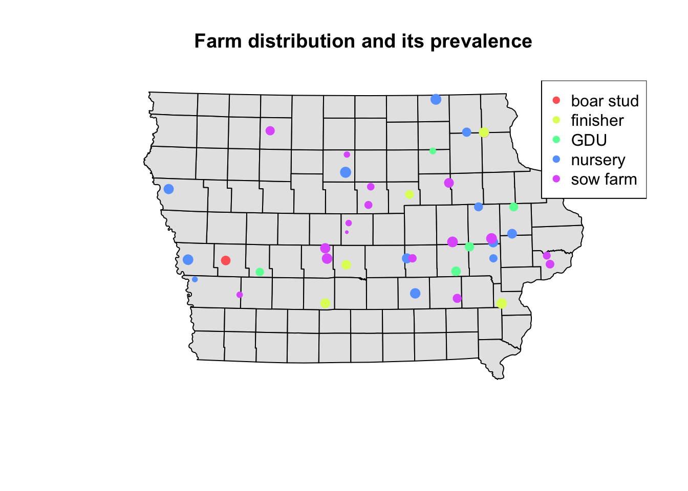
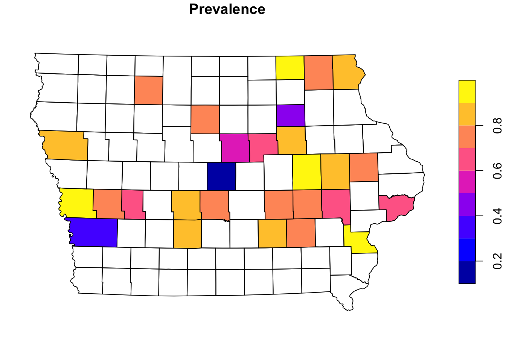
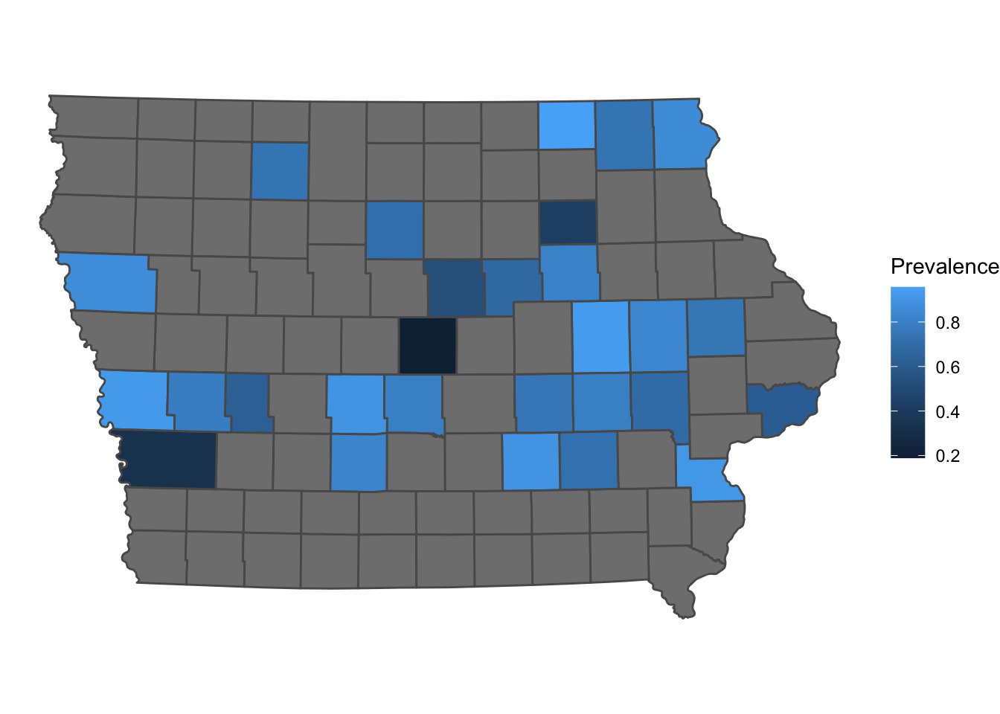

Spatial data maipulation
Pablo Gomez-Vazquez
Introduction.
Spatial data is usually represented in two different ways:
- Vectors: Represent objects in different dimensions.
- Raster: Represent continuous values in a grid.
Vector data
We can represent spatial objects in different dimensions:
- Point, is the most basic form of representing spatial data. It contains only the spatial coordinates of an even or object. For example, we use this to represent the sspatial location of a farm, a capture of an animal or a case report.
- Line, Includes the spatial location of an object and the direction. we can use lines to represent a road, a river or a route.
- Polygon, Includes the spatial location and geometry of an object. We use polygon data to represent the shape of a building, lake or a administrative area.
Besides having the location of an object, we can include other characteristics such as the name, id, temperature recorded, number of animals in the farm, etc…
Raster data:
We use raster data to represent continuous values in a field. Raster are just a grid where each cell has a value and in a grid. The resolution of a raster just represent the size of the cells from the grid. We use raster data to represent values such as altitude, temperature, among other continuous values.
Spatial objects in R.
In this tutorial we will introduce to spatial data manipulation in R.
There are two main formats to manipulate spatial data in R:
- SpatialDataFrame from the sp package: This is was the first format introduced in R for spatial data manipulation, therefore, this package has a lot of dependencies (packages that uses this format to do other functions) i.e raster, spdep, spstat.
- Simple features from the package sf: THis is a more recently developed package, this package was developed to be more intuitive and friendly with other packages such as dplyr. The problem with this package is that since its more recent, some packages doesn’t support this format.
Working with both formats has its advantages, for spatial data manipulation sf is more intuitive and powerful, but for spatial analysis sp is more robust.
Here we will use mostly the sf package, but there will be times that we will need to switch between formats.
The package STNet was developed specifically for this workshop. All the data and some functions we will use are contained in the package.
The installation of this package is done from github, so we will need to install the packagedevtools to acces the STNet package.
# If devtools is not installed we need to install it
install.packages("devtools")
# once installed we can use the following funtion to install STNet
devtools::install_github("jpablo91/STNet")1. Loading th data
# Loading the libraries
library(STNet)
library(sf)
library(dplyr)
# Loading the data from the package
data("PRRS")
data("SwinePrem")
# Loading the spatial data from the package
Io <- st_read(system.file("data/Io.shp", package = "STNet"))## Reading layer `Io' from data source `/Library/Frameworks/R.framework/Versions/4.0/Resources/library/STNet/data/Io.shp' using driver `ESRI Shapefile'
## Simple feature collection with 99 features and 2 fields
## geometry type: POLYGON
## dimension: XY
## bbox: xmin: -96.63567 ymin: 40.37454 xmax: -90.13931 ymax: 43.50465
## geographic CRS: WGS 84The st_read() function automatically shows some information about our shapefile, but we can see more details when printing the object into the console.
Io## Simple feature collection with 99 features and 2 fields
## geometry type: POLYGON
## dimension: XY
## bbox: xmin: -96.63567 ymin: 40.37454 xmax: -90.13931 ymax: 43.50465
## geographic CRS: WGS 84
## First 10 features:
## NAME_1 NAME_2 geometry
## 1 Iowa Adair POLYGON ((-94.24274 41.5030...
## 2 Iowa Adams POLYGON ((-94.4728 41.1566,...
## 3 Iowa Allamakee POLYGON ((-91.20658 43.4250...
## 4 Iowa Appanoose POLYGON ((-92.71506 40.5902...
## 5 Iowa Audubon POLYGON ((-94.74762 41.8609...
## 6 Iowa Benton POLYGON ((-91.83191 42.2986...
## 7 Iowa Black Hawk POLYGON ((-92.29958 42.2974...
## 8 Iowa Boone POLYGON ((-93.70088 42.2079...
## 9 Iowa Bremer POLYGON ((-92.08252 42.9061...
## 10 Iowa Buchanan POLYGON ((-91.60603 42.6437...The output shows:
- geometry type: The type of shapefile (either point data, lines or polygons). - dimension Dimensions used in the data.
- bbox: The extent of our data.
- epsg (SRID): The projection in the EPSG format (which is a standardized code to describe the projection).
- proj4string: The projection in proj4string format.
- And the first 10 features.
The sf objects are basically a data.frame with extra information about geometry, preojection and CRS. We can ask for the geometry only using the $ operator or the function st_geometry()and then show it in a plot.
plot(Io$geometry)
We can also extract only the data frame without geometry using the function data.frame():
data.frame(Io) %>%
head() # We use this function to see the first 6 only## NAME_1 NAME_2 geometry
## 1 Iowa Adair POLYGON ((-94.24274 41.5030...
## 2 Iowa Adams POLYGON ((-94.4728 41.1566,...
## 3 Iowa Allamakee POLYGON ((-91.20658 43.4250...
## 4 Iowa Appanoose POLYGON ((-92.71506 40.5902...
## 5 Iowa Audubon POLYGON ((-94.74762 41.8609...
## 6 Iowa Benton POLYGON ((-91.83191 42.2986...1.1 Converting from data.frame to sf
First we obtain the prevalence per farm:
PRRS_S <- PRRS %>%
group_by(id) %>%
summarise(N = n(), Cases = sum(Result)) %>% # Get the number of samples and positives
mutate(Prevalence = Cases/N) # Estmate an apparent prevalence.## `summarise()` ungrouping output (override with `.groups` argument)Now we join this new values with the locations of the farms (SwinePrem):
SwinePrem <- SwinePrem %>%
left_join(PRRS_S, by = "id")We can use the function st_as_sf() to transform the data.frame to sf. For this we will need to specify the data frame, coordinates and CRS.
Nodes <- SwinePrem %>%
st_as_sf(coords = c("long", "lat"), # The names of the coordinates in our data
crs = st_crs(Io)) # The CRS we will use.1.2 Projecting the data.
Our spatial objects are not projected, which means that are we are representing the data in a planar scale without considering the earth curvature, something only a flat earther will do. The impact of the projection in our data will be associated with the size of our studyy area. In smaller areas the projection wont have a big impact, but as our study are increases the projection will have a bigger impact when calculating distances.
We can use the function st_transform() to set a projection to our data.
Iop <- Io %>%
st_transform(st_crs("+init=EPSG:26975"))
Nodesp <- Nodes %>%
st_transform(st_crs(Iop))If we observe our mos (projected and not projected) side by side, we can notice that there is a slight curvature on the straight lines such as the north and south borders.
par(mfrow = c(1,2), mar = c(0, 0, 0, 0))
plot(Io$geometry)
plot(Iop$geometry)
Now that we have our data correctly projected, we can improve the visual aspect of our map.
2. Data visualization
Podemos visualizar multiples objetos espaciales en un mismo mapa. En R, los mapas funcionan por capas, podemos agregar multiples capas en un mapa, usamos el argumento add = T en las capas que queramos agregar al mapa base.
# Visualizar los datos:
plot(Io$geometry) # Mapa base, primera capa
plot(Nodes["Prevalence"], pch = 16, add = T) # segunda capaUsando la informacion de la prevalencia aparente por predio podems asignar el tamaño de los puntos, y colorearlos conforme al tipo de granja. Usaremos la funcion rescale() del paquete scales para reescalar el tamaño de los puntos entre 0.5 a 1.5 de acuerdo a su prevalencia aparente.
Tambien podemos agregar una leyenda que nos describa los simbolos del mapa, para esto usamos la funcion legend(), la cual puede tomar varios argumentos, como la posicion, los nombres de los niveles, entre otros.
# Usaremos R color brewer para obtener una palera de colores
colpal <- RColorBrewer::brewer.pal(n = length(levels(Nodes$farm_type)), # Numero de colores que necesitamos
name = "Dark2") # Paleta de la cual los obtendremos
# Visualizar el mapa
## mapa de fondo
plot(Iop$geometry, col = "grey90", main = "Distribucion de las granjas y su prevalencia")
## Primera capa
plot(Nodesp$geometry, # objeto que agregaremos
pch = 16, # tipo de punto
cex = scales::rescale(Nodesp$Prevalence, to = c(0.5, 1.5)), # Tamaño de punto
col = colpal[Nodesp$farm_type], # Color para cada punto
add = T) # agregar el objeto a la figura anterior
## Leyenda
legend("topright", # Posicion de la leyenda
legend = levels(Nodesp$farm_type), # Las categorias de la leyenda
pch = 16, # Tipo de punto
col = colpal) # Color de los puntoa
2.1 Mapa coroplético
Podemos agregar la informacion de prevalencia a nivel de condado y representarla en un mapa coropletico. Primero uniremos la informacion de los puntos (Nodes) con el mapa de los condados (Io) usando la funcion st_join(). Esta funcion creara duplicados de los condados que tienen mas de una granja, entonces tendremos que sumar el numero de casos de esos duplicados usando la funcion group_by() y summarise(), y despues calcularemos a nivel condado.
Iop <- Iop %>%
st_join(Nodesp) %>% # the data we are joining with
group_by(NAME_2) %>% # group by county
summarise_at(vars(N, Cases), .funs = ~sum(.,na.rm = T)) %>% # apply the sum function to the variables sN and Cases
mutate(Prevalence = Cases/N) # get the apparent prevalence at county levelplot(Iop["Prevalence"])
3. Otras librerias para mapas
Existen otras librerias que facilitan la visualizacion de mapas en R, usando el lenguaje basico de R se pueden hacer mapas de manera muy flexible, pero requiere mas conocimiento de las funciones en R. Otras opciones como tmap y ggplot, ofrecen funciones mas intuitivas para crear mapas de maner mas rapida.
3.1 tmap
La libreria tmap tiene varias opciones para mapas, la syntaxis es muy similar a ggplot, se pueden crear varios mapas y luego acomodarlos todos en un layout.
Por ejemplo, podemos especificar una paleta de colores para nuestro mapa
library(tmap)Primero crearemos un mapa de los predios y su prevalencia aparente.
# capa base
tm_shape(Iop) +
# color y otras opciones de la capa base
tm_polygons(col = "grey80") +
# segunda capa
tm_shape(Nodesp) +
# Opciones de la segunda capa
tm_symbols("Prevalence", # Nombre de la variable que se va a usar
size = 0.5, # Tamaño de los puntos
legend.hist = T) + # Aggregar un histograma
# Opciones del layout
tm_layout(legend.outside = T, # leyendas afuera
frame = F, # quitaremos el marco
legend.hist.width = 3) # ancho del histogramaPodemos tambien crear un mapa coropletico como el que hicimos anteriormente
tm_shape(Iop) +
tm_polygons("Prevalence", palette = "-RdYlBu") +
tm_layout(legend.outside = T, frame = F)
3.2 ggplot2
ggplot2 es una de las librerias mas populares para figuras en R, podemos agregar objetos sf usando la funcion geom_sf()
library(ggplot2)
ggplot() +
geom_sf(data = Iop, aes(fill = Prevalence)) +
theme_classic()
ggplot tiene muchas opciones de personalizacion pero en este tutorial no las cubriremos